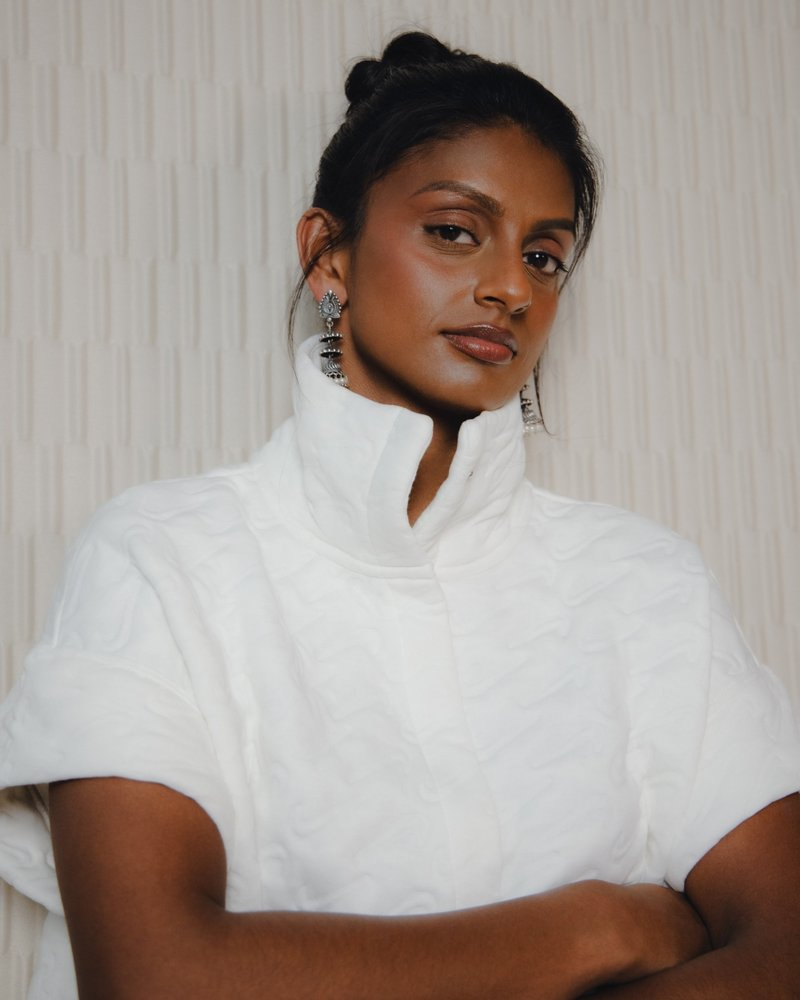

Media & press
Media & press.
Media appearances, short and full biographies, key facts, the topics I speak about and a photo to download.
As featured on
Media appearances
Sky Sports · BBC · ITV · TNT Sports · COPA90 · England Football · The FA · LumoTV · Together TV
Interview · TNT Sports · Sign Up – Into Football · May 2026
Back-to-back European champions
Talking about what England's second European title means for the Deaf community.
Watch on Facebook – Back-to-back European champions (opens in a new tab)Video · England Football · May 2026
Origins: Lucindha Lawson
England Football's Origins series on how football gave Lucindha a place to belong.
Watch on YouTube – Origins: Lucindha Lawson (opens in a new tab)Interview · Cambridgeshire Deaf Association · March 2026
Inside England's European title
Lucindha's first interview after scoring both goals in the European final against Poland.
Watch on Facebook – Inside England's European title (opens in a new tab)Video · Maidenhead United FC · March 2026
International Women's Day special
Lucindha on why Maidenhead United is "the best club to have deaf awareness" she has played for.
Watch on Facebook – International Women's Day special (opens in a new tab)Photoshoot · Hilton × England · January 2026
Hilton and England FA photoshoot
A photoshoot with Hilton and England.
TV news · BBC London · November 2025
Calling for fair funding for deaf athletes
Lucindha calls on the government to give deaf athletes the same support as Olympians and Paralympians.
Watch on Facebook – Calling for fair funding for deaf athletes (opens in a new tab)TV programme · LumoTV · September 2025
LumoTV Deaflympics: episode 1
A surprise visit to the Royal School for the Deaf Derby, where pupils guess her sport.
Documentary · COPA90 · June 2025
Finding the First South Asian Lioness
COPA90 documentary on why England is still waiting for its first senior South Asian Lioness.
Watch on YouTube – Finding the First South Asian Lioness (opens in a new tab)TV interview · Sky Sports · June 2025
Pre-tournament interview
Before the World Deaf Futsal Championship: "On and off the pitch, we're strong."
Watch on Facebook – Pre-tournament interview (opens in a new tab)Kit launch · England Football · Nike · May 2025
England women's 2025 kit launch
Featured in the photoshoot for England's new Nike kit, alongside England legends and senior Lionesses.
See the kit launch – England women's 2025 kit launch (opens in a new tab)TV programme · LumoTV · BSL Zone · September 2023
Getting Personal with Lucindha Lawson
A 27-minute conversation in British Sign Language with presenter Deepa Shastri. Contains discussion of suicide and childhood trauma.
Watch on YouTube – Getting Personal with Lucindha Lawson (opens in a new tab)Campaign · EE · June 2023
Media day with the Lionesses
An EE media day with Lionesses players at St George's Park.
Campaign · Kick It Out · July 2022
Kick It Out campaign
Featured in a Kick It Out campaign.
TV interview · ITV Anglia · March 2021
Interview with Cambridgeshire Deaf Association
A television interview filmed with Cambridgeshire Deaf Association.
TV feature · BBC · Match of the Day · March 2020
Brighton & Hove Albion community feature
Part of a Match of the Day feature on Brighton & Hove Albion's community work.
TV programme · Together TV · October 2019
The Muddy Boot Room
Appeared in The Muddy Boot Room on Together TV.
Campaign video · The FA · 2019
Asian Inclusion campaign
Featured in The FA's campaign to increase Asian participation in football.
Watch on YouTube – Asian Inclusion campaign (opens in a new tab)
For articles and match reports, see the News page.
Biography
You're welcome to use either version, edited for length if needed.
Short biography
About 50 words
Lucindha Lawson is an AAT licensed accountant, England Deaf futsal international and four-time Deaflympian. A profoundly Deaf British Sign Language user, she runs LUCINDHA LAWSON LTD, offering accessible accounting for Deaf and hearing clients, alongside coaching, public speaking and workshops on Deaf awareness, inclusion and resilience.
Full biography
About 150 words
Lucindha Lawson is an AAT licensed accountant and MAAT member, currently studying towards the Chartered Public Finance Accountant (CPFA) qualification through CIPFA. She is the founder of LUCINDHA LAWSON LTD, an accountancy practice built to be accessible to Deaf, Deafblind, hard-of-hearing, visually impaired and hearing clients.
As a profoundly Deaf British Sign Language (BSL) user, Lucindha experienced language deprivation as a child and lives with Long QT syndrome. She went on to become a graduate accountant, a back-to-back European champion and a four-time Deaflympian, representing England in Deaf women's futsal as part of the FA England Para Programme.
Lucindha is a volunteer coach in youth and Deaf football, holds the FA's UEFA C Licence, and is an ambassador for Sporting Equals, Brown Girl Sport and Beat The Block. She speaks and delivers workshops on Deaf awareness, inclusion, accessibility, women's sport, resilience and elite sport.
Key facts
- AAT licensed accountant and MAAT member (licence no. 1010532)
- Studying CPFA through CIPFA
- England Deaf women's futsal international
- Back-to-back European champion
- Four-time Deaflympian
- UEFA C Licence and FA National Futsal Course
- Ambassador for Sporting Equals, Brown Girl Sport and Beat The Block
- Profoundly Deaf British Sign Language user
Topics I speak about
- Deaf awareness and Deaf culture
- Language deprivation and education
- Equality, diversity and inclusion (EDI)
- Women's and elite sport
- Resilience and living with Long QT syndrome
- Accessible professional services and finance

Photos
Free to use with coverage of Lucindha and her work. Please credit India Bharadwaj and don't crop or alter the photo.
Download photo
Interviews and bookings
I'm a BSL user. Interviews can be arranged with a BSL interpreter, or questions can be sent by email. For talks and events, please include the date, location and audience.